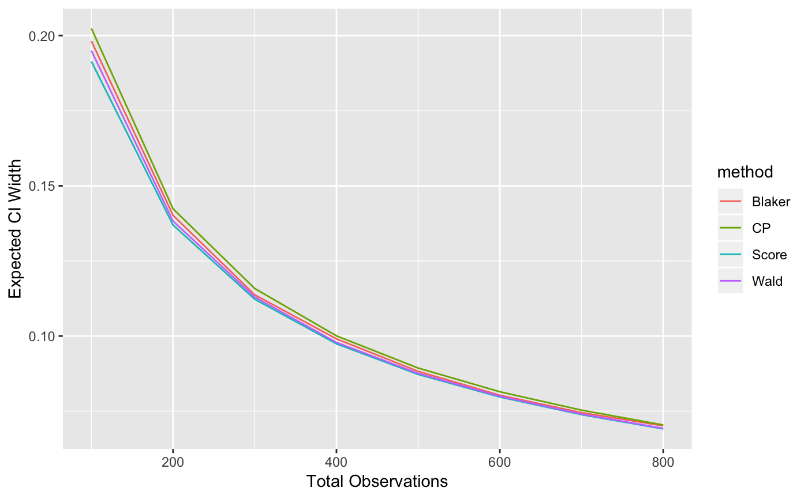

Tidy summarizes information about the components of a model. A model component might be a single term in a regression, a single hypothesis, a cluster, or a class. Exactly what tidy considers to be a model component varies cross models but is usually self-evident. If a model has several distinct types of components, you will need to specify which components to return.
# S3 method for binWidth tidy(x, ...)
| x | A |
|---|---|
| ... | Additional arguments. Not used. Needed to match generic
signature only. Cautionary note: Misspelled arguments will be
absorbed in |
A one-row tibble::tibble with columns:
Expected width of confidence interval.
Alternative hypothesis.
True proportion.
Total sample size.
Other bingroup tidiers: glance.binDesign,
tidy.binDesign
if (require("binGroup", quietly = TRUE)) { bw <- binWidth(100, .1) bw tidy(bw) library(dplyr) d <- expand.grid(n = seq(100, 800, 100), p = .5, method = c("CP", "Blaker", "Score", "Wald"), stringsAsFactors = FALSE) %>% group_by(n, p, method) %>% do(tidy(binWidth(.$n, .$p, method = .$method))) library(ggplot2) ggplot(d, aes(n, ci.width, color = method)) + geom_line() + xlab("Total Observations") + ylab("Expected CI Width") }